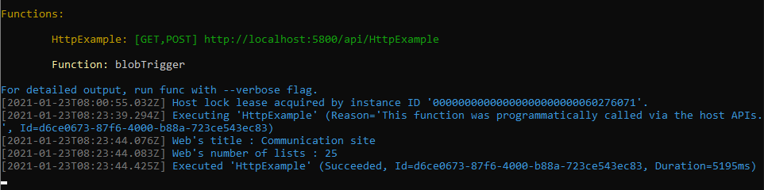
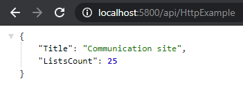

Authenticate to SharePoint Online through an Azure Function using PnP Framework
As you know (or maybe not?), the PnP Framework (v1.0.0) is now GA! 🎉
For those who are new here, it's a framework developed by the community (Microsoft employees, MVPs and other passionate developers), successor of the PnP Sites Core library and .NET Standard 2.0 compatible (.NET Framework 5 and .NET Core).
As the PnP Sites Core is no longer maintained, the PnP Framework is the new library to use for your Microsoft 365 Developments! This library will extend the SharePoint CSOM library by adding useful features such as simplified authentication flows (including token management), extensions methods to objects, utilities and more!
One important thing to know is that this framework is a transitional one, while the real successor will be the PnP Core SDK (on which PnP Framework and the new PnP PowerShell depends) but is still in beta.
Among the major features of the PnP Framework, one is the authentication workflow used inside, which is now based on MSAL SDK for .NET! This is a great improvment, which involves some small changes regarding the code that will manage the authentication. Let's see with a short example!
Prerequisites
- An Office 365 (Dev) Tenant or a Partner Demo Tenant
- Visual Studio (2017 or later) including the Azure Development workload (Azure Function Core (CLI) Tools)
- (optional) An Azure subscription and the following Azure AD role at least
- Application Administrator
About Azure Functions v1
For those who are familiar with Azure Functions v1 and SharePoint CSOM with latest version of PnP Sites Core library, you're probably aware of a compatibility issue regarding the Newtonsoft.Json library, which uses the 9.0.1 version in the Microsoft.NET.Sdk.Functions (v1.0.38) library, and a newer version in the PnP Sites Core library (issue referenced here).
Great news: the PnP Framework works perfectly with Azure Functions v3 (using Microsoft.NET.Sdk.Functions v3.0.11), let's check it out!
Init Azure Function v3
You can follow this quick start to init a project.
(Follow the steps until the Testing functions part, the Azure part will follow later as an option)
Get Nuget Packages
Below the Nuget packages required to test the architecture:
- Microsoft.SharePointOnline.CSOM (to work with SharePoint Site)
- PnP.Framework (to easily authenticate to SharePoint site)
- (optional) Azure.Identy (for the authentication to the KeyVault)
- (optional) Azure.Security.KeyVault.Secrets (to get the certificate)
Setup connection to SharePoint
Below the code sample to setup a connection to SharePoint using Client Credential Flow
1 2 3 4 5 6 7 8 9 10 11 12 13 14 15 16 17 18 19 20 21 22 23 24 25 26 27 28 29 | |
Warning
This authentication method is available through the PnP Framework, but not by design with CSOM for .NET Standard. More info here
Try it locally
Once you've got everything ready, run your function locally! Go to your browser and type http://localhost:5800/api/HttpExample
You should see something like this:
From the Azure Functions Core Tools

From the browser

Setup connection with a certificate (optional)
Now let's say you want to execute your Function App in an Azure AD (AAD) Application context. The idea is to use a certificate stored in an Azure Key Vault.
For the AAD Application registration, the creation of the Key Vault, the setup of managed identity and the configuration of SharePoint API Permissions, I'll redirect you to my previous article here.
Below the complete script to authenticate through AAD
1 2 3 4 5 6 7 8 9 10 11 12 13 14 15 16 17 18 19 20 21 22 23 24 25 26 27 28 29 30 31 32 33 34 | |
That's it
As you can see, the main object to work with during authentication is the AutenticationManager object, which will lead you to manage authentication flows, such as client credential, device code or certificate. It's this object that will now handle login info (except for legacy SharePoint AppOnly authentication which uses Azure ACS).
Happy coding!